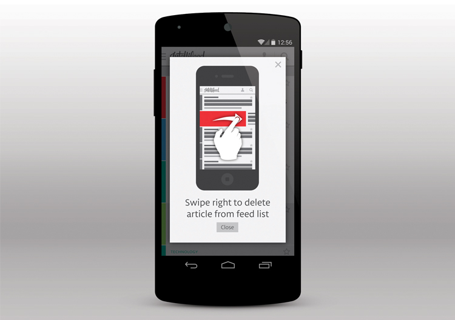
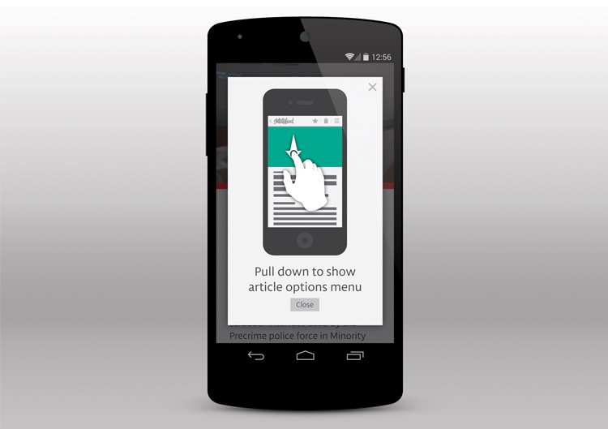

Intellifeed
App Interface Design
Intellifeed is the concept for an intelligent news reader that prioritizes stories based on user preferences. The more the user rates articles, the more accurately it can predict what the user wants to read and selects those articles to be displayed in the user’s feed.
The user’s experience was considered at every key point in the app’s function. One major way this was accomplished was through the use of onboarding, which teaches the user how to use certain features of the app as they are encountered.

